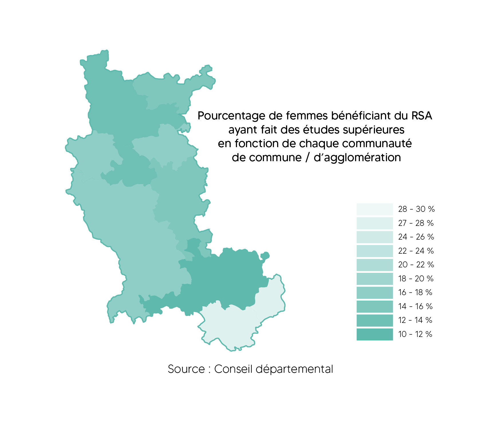
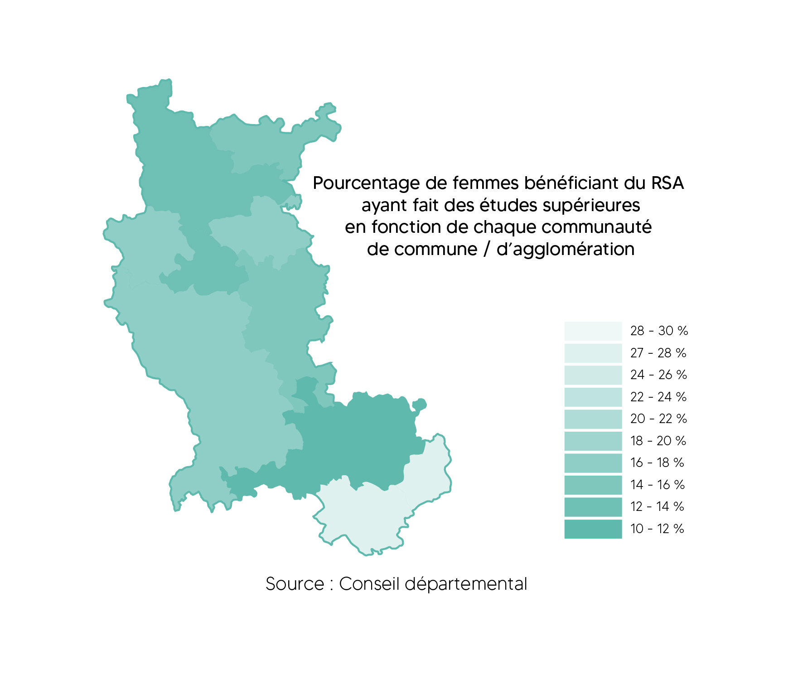

Adolescence
 

Solutions présentées
----------------------------------------------------------------------------------------------------------------------------------------------------------------------
Sensibiliser et promouvoir auprès des adolescentes, les métiers techniques du numérique.
Cela passe par une promotion des activités de programmation et clubs liés au développement du numérique
tel que l’atelier Google présent à Saint-Etienne.
Les canaux à utiliser peuvent être divers et variés:
- Réseaux Sociaux (influenceurs, publicités, posts sur les pages officielles associées)
- Technique de mobilisation communautaire
- Installation de kiosques d’information à des points stratégiques
- Amélioration des dispositifs existants :
Promouvoir des journées qui ont pour but de démystifier les métiers techniques liés au monde du numérique
telle que la journée de la femme digitale.
- Augmenter la fréquence de réalisation d'événements comme l’exposition
« Compétences Numériques et Métiers de Demain » permettant de comprendre l’évolution de ces métiers,
les possibilités d’orientation dans ces filières ainsi que des compétences nécessaires tout en présentant des femmes
inspirantes et pionnières dans le domaine.)
- Cibler les actions dans les collèges/lycées où on constate que le taux de décrochage des
femmes bénéficiant du RSA après le baccalauréat est le plus fort. Comme par exemple : Saint-Etienne Métropole, Communauté d’agglomération roannaise, Communauté des communes des Vals d’Aix et Isable)
Définition du problème
----------------------------------------------------------------------------------------------------------------------------------------------------------------------
- La conséquence du manque de modèle impact le choix des filières générales
fait par les femmes dans les établissements scolaires secondaires.
- Disparité du taux de décrochage professionnel dans le département chez les femmes bénéficiant du RSA.
Représentation du contexte
----------------------------------------------------------------------------------------------------------------------------------------------------------------------